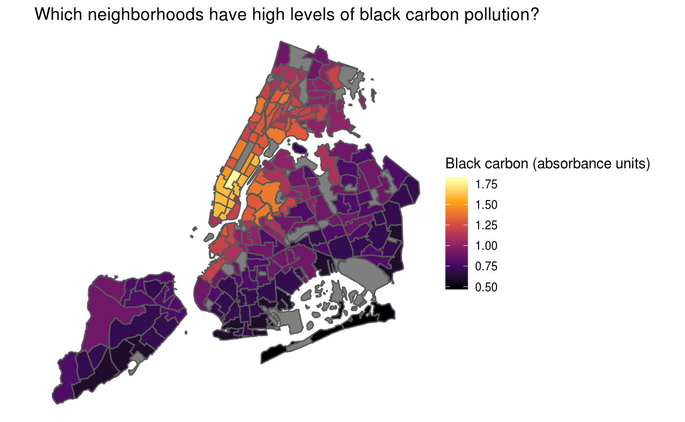

Basic Usage
The most basic usage of nycgeo is to get boundaries in the sf format. Use nyc_boundaries() to get your desired geography. To make best use of the package, you should also load the sf package when using nycgeo. For these examples, I’ll also load tidyverse as this will allow us to take advantage of pretty tibble printing and will come in handy when we want to manipulate and map the spatial data later.
library(nycgeo)
library(sf)
library(tidyverse)
nyc_boundaries(geography = "tract")
#> Simple feature collection with 2166 features and 12 fields
#> geometry type: MULTIPOLYGON
#> dimension: XY
#> bbox: xmin: 913180.2 ymin: 120131.4 xmax: 1067382 ymax: 272798.5
#> epsg (SRID): 2263
#> proj4string: +proj=lcc +lat_1=41.03333333333333 +lat_2=40.66666666666666 +lat_0=40.16666666666666 +lon_0=-74 +x_0=300000.0000000001 +y_0=0 +ellps=GRS80 +towgs84=0,0,0,0,0,0,0 +units=us-ft +no_defs
#> # A tibble: 2,166 x 13
#> geoid borough_tract_id state_fips county_fips tract_id county_name
#> <chr> <chr> <chr> <chr> <chr> <chr>
#> 1 3606… 1000100 36 061 000100 New York
#> 2 3606… 1000201 36 061 000201 New York
#> 3 3606… 1000202 36 061 000202 New York
#> 4 3606… 1000500 36 061 000500 New York
#> 5 3606… 1000600 36 061 000600 New York
#> 6 3606… 1000700 36 061 000700 New York
#> 7 3606… 1000800 36 061 000800 New York
#> 8 3606… 1000900 36 061 000900 New York
#> 9 3606… 1001001 36 061 001001 New York
#> 10 3606… 1001002 36 061 001002 New York
#> # … with 2,156 more rows, and 7 more variables: borough_name <chr>,
#> # borough_id <chr>, nta_id <chr>, nta_name <chr>, puma_id <chr>,
#> # puma_name <chr>, geometry <MULTIPOLYGON [US_survey_foot]>Filter by geography
If you don’t need census tracts for the entire city, you can use the filter_by and region arguments of nyc_boundaries() to specify the area you are interested in. For example, the following code returns only census tracts in Brooklyn and Queens.
bk_qn_tracts <- nyc_boundaries(
geography = "tract",
filter_by = "borough",
region = c("brooklyn", "queens")
)
ggplot(bk_qn_tracts) +
geom_sf() +
theme_minimal()
Note, you can select multiple regions by passing a character vector to the region argument, but you can only choose a single geography to filter_by. Additionally, you can only filter by a geography that is larger than or equal to the boundaries you request. For example, it is not possible to filter PUMAs by NTAs because NTAs are smaller than PUMAs.
Adding American Community Survey Data
nycgeo includes selected estimates from the American Community Survey as datasets. You can access these datasets directly or have them appended to the spatial data. To print a tibble of ACS data, simply call the data you want.
nta_acs_data
#> # A tibble: 189 x 27
#> nta_id pop_total_est pop_total_moe pop_white_est pop_white_moe
#> <chr> <dbl> <dbl> <dbl> <dbl>
#> 1 BK09 24212 891. 17734 859.
#> 2 BK17 67681 1736. 43146 1449.
#> 3 BK19 35811 1388. 24817 1139.
#> 4 BK21 31132 1268. 9804 894.
#> 5 BK23 16436 707. 15380 698.
#> 6 BK25 45031 1498. 33709 1346.
#> 7 BK26 30828 1480. 14676 961.
#> 8 BK27 32808 1293. 14483 863.
#> 9 BK28 93114 2087. 38709 1559.
#> 10 BK29 66055 1757. 29318 1293.
#> # … with 179 more rows, and 22 more variables: pop_white_pct_est <dbl>,
#> # pop_white_pct_moe <dbl>, pop_black_est <dbl>, pop_black_moe <dbl>,
#> # pop_black_pct_est <dbl>, pop_black_pct_moe <dbl>, pop_hisp_est <dbl>,
#> # pop_hisp_moe <dbl>, pop_hisp_pct_est <dbl>, pop_hisp_pct_moe <dbl>,
#> # pop_asian_est <dbl>, pop_asian_moe <dbl>, pop_asian_pct_est <dbl>,
#> # pop_asian_pct_moe <dbl>, pop_ba_above_est <dbl>,
#> # pop_ba_above_moe <dbl>, pop_ba_above_pct_est <dbl>,
#> # pop_ba_above_pct_moe <dbl>, pop_inpov_est <dbl>, pop_inpov_moe <dbl>,
#> # pop_inpov_pct_est <dbl>, pop_inpov_pct_moe <dbl>To add census estimates to an sf object, use add_acs_data = TRUE to an nyc_boundaries()call. For example, here we get all NTAs in Manhattan with ACS data appended. One convenience of having the ACS data joined to the sf object is that you can very simply make a choropleth map. Here we do it with ggplot2, but you could use tmap, leaflet or any other spatial package that works with sf objects.
mn_ntas <- nyc_boundaries(
geography = "nta",
filter_by = "borough",
region = "manhattan",
add_acs_data = TRUE
)
ggplot(mn_ntas) +
geom_sf(aes(fill = pop_ba_above_pct_est)) +
scale_fill_viridis_c(
name = "Bachelor's or above",
labels = scales::percent_format(),
option = "magma"
) +
theme_void() +
theme(panel.grid = element_line(color = "transparent")) +
labs(title = "Which neighborhoods in Manhattan are most educated?")
Joining with other data
One use case of nycgeo() is if you have non-spatial data that relates to census tracts, NTAs, or other geographies and need to join that data with spatial boundaries to plot or otherwise analyze. This non-spatial data may be coded in a variety of ways and might not have names or IDs that match your spatial data. The sf data provided in nycgeo seeks to have a variety of geographic metadata that will match whatever labels your non-spatial data has.
In this example, we have non-spatial data from the NYC Neighborhood Health Atlas at the NTA-level from which we would like to make a choropleth map. To do this, we import the .csv file and then join it to the spatial NTA object matching on NTA IDs. Then, we can map it as in the above example.
nta_health <- read_csv("https://raw.githubusercontent.com/mfherman/nycgeo/master/inst/extdata/nta-health.csv") %>%
select(NTA_Code, BlackCarbon)
nyc_boundaries(geography = "nta") %>%
left_join(nta_health, by = c("nta_id" = "NTA_Code")) %>%
ggplot() +
geom_sf(aes(fill = BlackCarbon)) +
scale_fill_viridis_c(name = "Black carbon (absorbance units)", option = "inferno") +
theme_void() +
theme(panel.grid = element_line(color = "transparent")) +
labs(title = "Which neighborhoods have high levels of black carbon pollution?")
Finding which districts a set of points lies within
Point-in-polygon operations are common tasks for spatial analysis. Given a set of points we want to find out which polygon contains each point. A real-world application of this would be counting the number of schools in each community district.
We start with a (non-spatial) data frame of all schools in New York, but with columns for latitude and longitude. Then we use those latitudes and longitudes to convert the data frame to an sf object. From there, we can use the nyc_point_poly() function to find which community district (CD) each point (school) is in and then count by CD to get the total number of schools in each CD.
nyc_schools <- read_csv("https://raw.githubusercontent.com/mfherman/nycgeo/master/inst/extdata/nyc-schools.csv")
schools_sf <- nyc_schools %>%
st_as_sf(
coords = c("longitude", "latitude"),
crs = 4326,
stringsAsFactors = FALSE
)
nyc_point_poly(schools_sf, "cd") %>%
st_set_geometry(NULL) %>%
count(cd_name, borough_cd_id)
#> # A tibble: 60 x 3
#> cd_name borough_cd_id n
#> <chr> <chr> <int>
#> 1 Bronx Community District 1 201 69
#> 2 Bronx Community District 10 210 32
#> 3 Bronx Community District 11 211 41
#> 4 Bronx Community District 12 212 36
#> 5 Bronx Community District 2 202 29
#> 6 Bronx Community District 3 203 72
#> 7 Bronx Community District 4 204 67
#> 8 Bronx Community District 5 205 43
#> 9 Bronx Community District 6 206 55
#> 10 Bronx Community District 7 207 34
#> # … with 50 more rowsAvailable datasets
| Geography | Definition | Spatial data | Census data | Filter by |
|---|---|---|---|---|
"borough" |
borough (county) | nycgeo::borough_sf |
nycgeo::borough_acs_data |
"borough" |
"puma" |
public use microdata area | nycgeo::puma_sf |
nycgeo::puma_acs_data |
"borough","puma"
|
"cd" |
community district | nycgeo::cd_sf |
not currently available |
"borough", "cd"
|
"nta" |
neighborhood tabulation area | nycgeo::nta_sf |
nycgeo::nta_acs_data |
"borough","puma", "nta"
|
"tract" |
census tract | nycgeo::tract_sf |
nycgeo::tract_acs_data |
"borough","puma", "nta"
|
"block" |
census block | nycgeo::block_sf |
nycgeo::block_census_data |
"borough","puma", "nta"
|
"council" |
city council district | nycgeo::council_sf |
not currently available | none |
"police" |
police precinct | nycgeo::police_sf |
not currently available | none |
"school" |
school district | nycgeo::school_sf |
not currently available | none |
"cong" |
u.s. congressional district | nycgeo::cong_sf |
not currently available | none |